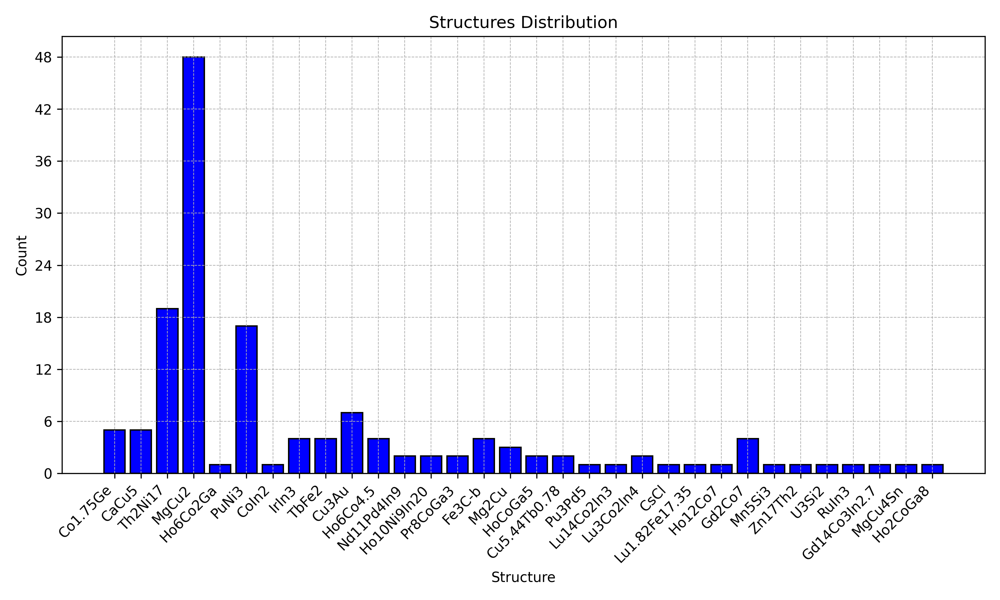

Statistics over many CIFs#
A single .cif gives you geometry for one structure
(physical features). When you have a folder,
CifEnsemble is the hands-on tool: clean the set, see what is in it,
filter, plot histograms, and copy matching files into new folders.
Elemental composition features are not from these CIFs - use OLED (Data in Brief table).
What data is on this page?#
Content |
Source |
|---|---|
Runnable demo (2 files) |
Packaged GdSb + HoSb ( |
Large structure / CN histograms |
Figures from published / JOSS-scale ensembles - illustrative, not re-run here |
If you no longer have a large private CIF collection on disk, you can still
learn the API on the two-file demo and see what large runs look like
from the figures. The same calls scale: tens of thousands of CIFs in SAF/CAF
workflows, with cifkit as the geometry engine
(Digital Discovery).
1. Work on a copy (hands-on setup)#
Preprocessing can rewrite ill-formatted files in place, and
move_cif_files relocates them. Always work on a scratch copy:
import os
import shutil
from cifkit import CifEnsemble, Example
scratch = "demo_cifs"
os.makedirs(scratch, exist_ok=True)
for name in os.listdir(Example.demo_cif_folder_path):
if name.endswith(".cif"):
shutil.copy(os.path.join(Example.demo_cif_folder_path, name), scratch)
ensemble = CifEnsemble(scratch)
What just happened: cifkit walked the folder, preprocessed each CIF for
gemmi compatibility, reported how many landed in error_* folders, then
built a Cif object per file.
CIF Preprocessing in demo_cifs begun...
Preprocessing demo_cifs/GdSb.cif (1/2)
Preprocessing demo_cifs/HoSb.cif (2/2)
SUMMARY
# of files moved to 'error_*' folders: 0 (all clean)
Initializing 2 Cif objects...
Finished initialization!
With two clean rocksalt pnictides, you are ready to ask questions of the set - not of one file at a time.
2. “What is in this folder?”#
import pandas as pd
print("file_count:", ensemble.file_count)
print("unique_formulas:", ensemble.unique_formulas)
print("unique_structures:", ensemble.unique_structures)
print("unique_space_group_names:", ensemble.unique_space_group_names)
print("unique_elements:", ensemble.unique_elements)
Turn the same facts into a small table you can paste into a notebook or report:
overview = pd.DataFrame(
[
("file_count", ensemble.file_count),
("unique_formulas", sorted(ensemble.unique_formulas)),
("unique_structures", sorted(ensemble.unique_structures)),
("unique_space_group_names", sorted(ensemble.unique_space_group_names)),
("unique_elements", sorted(ensemble.unique_elements)),
],
columns=["stat", "value"],
)
print(overview.to_string(index=False))
stat |
value |
|---|---|
file_count |
2 |
unique_formulas |
[‘GdSb’, ‘HoSb’] |
unique_structures |
[‘NaCl’] |
unique_space_group_names |
[‘Fm-3m’] |
unique_elements |
[‘Gd’, ‘Ho’, ‘Sb’] |
Reading the result (demo story): two formulas, one structure type (NaCl), one space group, three elements. On a real database dump you would see dozens of structure types and space groups here - same API, bigger folder.
Per-file series also exist (formula_stats, minimum_distances,
supercell_atom_counts, …) - see the
CifEnsemble API.
3. “Give me only the files that match …”#
Filters return paths (sets), so you can chain logic or hand them to copy/move:
print(ensemble.filter_by_formulas(["GdSb"]))
print(ensemble.filter_by_elements(["Ho"]))
print(ensemble.filter_by_space_group_names(["Fm-3m"]))
{'demo_cifs/GdSb.cif'}
{'demo_cifs/HoSb.cif'}
{'demo_cifs/GdSb.cif', 'demo_cifs/HoSb.cif'}
Hands-on read: GdSb-only is one path; Ho-containing is the other; space group Fm-3m is both. Other filters include structure, space-group number, composition type, site-mixing type, CN ranges, min distance, and supercell size.
4. “Park the matches in a new folder”#
ensemble.copy_cif_files(ensemble.filter_by_formulas(["GdSb"]), "sorted_GdSb")
print(os.listdir("sorted_GdSb"))
['GdSb.cif']
This is the usual lab pattern: filter a large dump, copy the hits into
sorted_* for the next notebook or for SAF/CAF featurization.
5. “Show me the distribution” (histograms)#
On the demo (2 files) a structure histogram is almost trivial - both are NaCl - but the call is what you reuse on large sets:
ensemble.generate_structure_histogram(output_dir="histograms")
print(os.listdir("histograms"))
['structures.png']
Available histograms: structure, formula, tag, space group number and name, supercell size, elements, CN by both method families, composition type, and site mixing type.
What a larger ensemble looks like#
These figures are not recomputed from the two-file demo. They show the kind of output you get when the folder is big enough for histograms to matter.

Fig. 4 Structure histogram from a larger ensemble via
generate_structure_histogram. Same method as above; different folder size.#

Fig. 5 JOSS Figure 1. One CIF polyhedron (left) and ensemble CN distribution (right) - the single-file vs many-file story on one page.#
Scale (when you do have thousands of files)#
Scale |
What to expect |
|---|---|
Demo (2 CIFs) |
Seconds - this tutorial |
~10,000 CIFs |
Roughly 30-60 minutes on a laptop (supercell + neighbors per file) |
SAF + CAF training tables |
Tens of thousands of CIFs; feature tables on the order of a million rows (Digital Discovery); |
You do not need the large dataset to learn the API. You need it only when you want to regenerate large histograms or feature matrices yourself.
API#
Full method list: CifEnsemble.
Next#
Parse physical features from a .cif - distances, CN, polyhedra
OLED - elemental / composition features (dataset table, not from CIF)
Notes (demo data, citation)#
Runnable numbers on this page use packaged GdSb and HoSb only.
Large histograms are published / JOSS figures for orientation.
Soft cite for geometry / ensemble work: cifkit (JOSS); for feature-generation workflows also SAF + CAF (Digital Discovery). CITATION.txt · home page.